바이오화학제품제조기사 (2014-05-25 기출문제)
1과목: 미생물공학
1. 담수로부터 분리한 자가영양주(autotroph)인 Klebsiella aerogenes를 배양하기 위한 최소배지(miniral medium)를 다음 표와 같이 고안하였다. 배지성분 중 결핍된 영양원이 발견되어 이를 보충하고자 한다. 다음 중 어느 물질을 보충하여야 하는가?
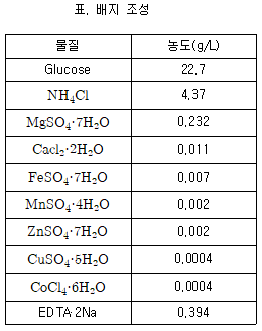
- NaCl
- KH2PO4
- 효모엑기스(yeast extract)
- (NH4)2SO4
(정답률: 69%)

2. 페니실린 발효에 대한 다음 설명 중 틀린 것은?
- Corn steep liquor는 질소원으로 이용되는데 다른 질소원에 비해 높은 페니실린 생산효율을 얻을 수 있다.
- 페니실린 측쇄의 전구체는 자체적으로 생산되어 발효배지에 첨가할 필요가 없다.
- 페니실린은 비성장 관련 생산성의 특성을 가진 2차 대사산물이다.
- 배양액의 높은 점도는 페니실린 발효공정의 산소 전달 문제를 야기시키는 가장 주된 문제점이다.
(정답률: 94%)
3. 진핵생물은 산소 호흡 동안 포도당 1분자로부터 이론적으로 최대 38개의 ATP를 생산한다. 포도당 1분자가 TCA 회로안에서 산화적 인산화에 의해 생산하는 이론적인 ATP 분자는 몇 개인가? (단, NADH 한 분자당 3분자의 ATP, FADH2 한 분자당 2분자의 ATP가 형성된다고 가정한다.)
- 20
- 22
- 24
- 28
(정답률: 66%)
4. Penicillin 합성과정에서 feedback regulation을 일으키는 아미노산은?
- Leucine
- Methionine
- Phenylalanine
- Lysine
(정답률: 85%)
5. 다음 중 그람음성균에만 존재하는 것은?
- 리보솜 (ribosome)
- 세포간극 (periplasmic space)
- 테이코익산 (teichoic acid)
- 펩티도글리칸 층 (peptidoglycan layer)
(정답률: 70%)
6. 효소의 생산에서 동물과 식물에 비하여 미생물을 이용하는 것이 장점이 아닌 것은?
- 대량 생산이 용이하기 때문이다.
- 원하는 효소의 탐색이 용이하다.
- 생산원가가 저렴하다.
- 식품 및 의료용으로의 사용이 용이하다.
(정답률: 83%)
7. 방향족 아미노산이 아닌 것은?
- 아르기닌 (arginine)
- 타이로신 (tyrosine)
- 페닐알라닌 (phenylalanine)
- 트립토판 (tryptophan)
(정답률: 88%)
8. 이당류는 세포내로 흡수되기 앞서 효소에 의한 직접 가수분해 혹은 가인산 분해과정에 의해 단당류로 분해된다. 다음 중 세포내로 흡수되기 위한 이당류의 가수분해가 아닌 것은?
- 말토스 + H2O → 2 포도당
- 젖당 + H2O → 만노스 + 포도당
- 설탕 + H2O → 포도당 + 과당
- 말토스 + Pi → β-D-포도당-1-인산 + 포도당
(정답률: 84%)
9. 다음 [보기] 중 초산생산에 적합한 균주가 구비해야 할 요건을 모두 나열한 것은?
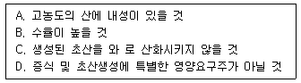
- A
- A, B
- A, B, C
- A, B, C, D
(정답률: 74%)
10. Aspergillus oryzae에 의해서 포도당으로부터 생산되며 플라스틱, 살충제 등의 원료로 사용되는 유기산은?
- Acetic acid
- Fumaric acid
- Malic acid
- Kojic acid
(정답률: 75%)
11. 다음 [보기] 중에 효소 생합성시 전사 과정에서 일어나는 조절작용에 해당하는것을 모두 고른것은?
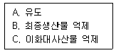
- B, C
- A, B
- A, C
- A, B, C
(정답률: 66%)
12. Lactobacillus delbrueckii는 어떤 조건하에서 헤테로젖산발효(hetero-fermentative lactic acid production)를 한다고 알려져 있다. 공급된 포도당이 모두 젖산발효에만 사용된다고 했을 때, 150g의 포도당으로부터 생산될 것으로 기대되는 젖산의 양은 얼마인가? (단, 포도당의 분자량은 180, 젖산의 분자량은 90이다.)
- 50g
- 150g
- 90g
- 75g
(정답률: 86%)
13. Penicillin발효에서는 포도당을 탄소원으로 사용하면 균체증식속도는 우수하나 penicillin생합성이 저해되면 반면, 젖당(lactose)을 사용하면 균체증식속도는 매우 느리나 penicillin의 생합성속도는 양호하다. 이 특성을 이용하여 균체증식과 penicillin의 합성을 동시에 향상시키기 위해서는 어떻게 해야 하는가?
- 배지에 적당향의 포도당과 젖당을 시차를 두고 공급한다.
- 배지에 포도당은 공급하지 않고 젖당의 초기농도를 높게 한다.
- 포도당의 초기농도를 낮추고 젖당은 사용하지 않는다.
- 포도당의 초기농도를 높이고 젖당은 사용하지 않는다.
(정답률: 95%)
14. 당단백질의 N-linked 당쇄반응은 특정부위에서 일어난다. 다음 중 N-linked 당이 부착할 수 있는 아미노산 서열이 아닌 것은?
- Asn - Lys - Ser
- Asn - Lys - Thr
- Lys - Asn - Ser
- Asn - Arg - Ser
(정답률: 71%)
15. E. coli는 재조합 단백질을 생산하기 위한 숙주로서 흔히 이용된다. 그러나 이 균주의 문제점은 목적하는 단백질을 균체 밖으로 배출하지 않는 점이다. 균체 내에 단백질이 높은 농도로 존재할 때 단백질 분해효소의 작용이나 불용화(insolubilization)에 의하여 생성되는 형태를 무엇이라고 하는가?
- Transfer factor (전이인자)
- Inclusion body (내포체)
- Hybrid protein (잡종단백질)
- Polymorphism (다형성)
(정답률: 98%)
16. 미생물의 보존방법 중 종에 관계없이 장기보존에 가장 널리 이용되는 것은?
- 계대 배양법
- 동결보존법
- 유동파라핀중층법
- 담체보존법
(정답률: 92%)
17. 다음은 Clarke와 Carbon의 식이다. 인간 β-hemoglobin의 유전자 크기는 1.5kb이고, 인간 반수체(haploid) 게놈은 3*106kb일 때 재조합 형질전환주에서 90%의 확률로 최소한 하나 이상의 β-hemo globin 유전자가 나타나려면 서로 다른 1.5kb 짜리 제한절편을 몇 개 clone 해야 하는가? 
(단, N:목적유전자가 클론된 형질전환주를 알기 위해 필요한 전체재조합 형질전환주(reconbinant transformant)의 수 P: 재조합주에 원하는 유전자가 들어갈 확률 f: 총 게놈 크기에 대한 제한절편(restriction fragment) 크기의 비이다.)
- 4.4×106
- 2.23×107
- 1.⑤×107
- 4.6×106
(정답률: 37%)
18. 1mol의 포도당으로부터 정상 젖산발효를 거쳐 젖산을 생산하고자 할 때 이론적으로 몇 mol을 생산할 수 있는가?
- 1
- 2
- 3
- 4
(정답률: 99%)
19. 상업적 규모의 발효 배지 선정시 고려해야할 가장 중요한 사항은?
- 가격과 발효제품 수율
- 가격과 냄새
- 탄소원 농도와 발효제품 수율
- 가격과 탄소원 농도
(정답률: 81%)
20. 산업적으로 본배양 배지에 많이 사용되는 질소원은?
- 전분
- ethanol
- 대두분
- peptone
(정답률: 77%)
2과목: 배양공학
21. 연속식 반응기에서 희석속도가 0.4hr-1이고 비생산속도가 0.2hr-1일 때, 반응기의 세포농도가 10 g/L이면 출구로 나오는 생산물의 농도는 몇 g/L 인가?
- 5
- 10
- 15
- 20
(정답률: 54%)
22. 키모스탯(chemostat) 연속배양에서 제한기질(limiting substrate) 농도에 대한 설명으로 옳지 않는 것은?
- 저농도에서 세출(washout) 현상이 일어난다.
- 희석속도(dilution rate)의 영향을 받는다.
- 시간에 따른 변화가 없다.
- 공급기질 온도 보다 같거나 낮게 유지된다.
(정답률: 57%)
23. 다음의 이당류 중 비환원당은?
- 슈크로오스
- 락토오스
- 말토오스
- 셀로비오스
(정답률: 73%)
24. 다음의 세포영양소 중 다량영양소(macronutrient)에 해당하는 것은?
- 비타민, 호르몬과 같은 생장인자(growth factor)
- 주요 대사과정에 작용하는 효소의 보조인자
- 세포가 주로 10-4M농도 이하로 필요로 하는 영양소
- 종속영양주(heterotroph) 세포가 에너지원으로 이용하는 영양소
(정답률: 91%)
25. 산업적인 발효에 사용되는 주요 탄소원이 아닌 것은?
- 전분(starch)
- 당밀(molasses)
- 대두분(soy meal)
- 옥수수 시럽(corn syrup)
(정답률: 83%)
26. 다음 중 식물세포 배양의 장점으로 가장 거리가 먼 것은?
- 제어되고 최적화된 조건하에서의 배양이 가능하다.
- 식물 경작보다 생산 물질의 생산성과 효능이 항상 탁월하다.
- 세포주 개량, 인공종자 생산에 응용이 가능하다.
- 변형된 천연물이나 새로운 물질생산이 가능하다.
(정답률: 82%)
27. 회분식 세포 배양의 성장형태(growth phase)에서 생장속도와 사멸속도가 동일한 기간은?
- 지연기(lag phase)
- 지수성장기(exponential phase)
- 정지기(stationary phase)
- 쇠퇴기(decline phase)
(정답률: 99%)
28. 효소 활성에 영향을 미침으로써 미생물 생장 속도에 영향을 주는 인자는?
- 수소이온농도
- 용존산소농도
- 산화환원전위
- 용존이산화탄소농도
(정답률: 92%)
29. 미생물의 배양시 pH 조절 및 질소원으로 사용되는 물질은?
- 황산암모늄
- 수산화칼슘
- 수산화나트륨
- 암모니아
(정답률: 73%)
30. 재조합 단백질을 생산할 때 숙주로 미생물인 대장균을 사용할 경우의 단점에 해당하는 것은?
- 단백질 발현율이 높다.
- 목적 단백질이 내포체를 이루는 경우가 많다.
- 생장속도가 빠르고, 고농도 배양이 가능하다.
- 배지값이 저렴하다.
(정답률: 96%)
31. 산소소비속도 OUR을 측정하여 유지계수 ms를 무시하고 세포농도를 측정하고자 한다. 곰팡이 배양에서 측정된 산소소비속도 OUR이 0.393g O2/L·h이었고, 비생장속도 μ가 0.15h-1이었다면 산소에 대한 기질수율 YX/O2가 2.79g/g이었다면 세포농도 X는?
- 7.31g/L
- 7.52g/L
- 7.72g/L
- 7.92g/L
(정답률: 74%)
32. 각각의 최종산물이 서로 독립적으로 그 합성제의 첫 번째 반응을 각각의 백분율로 저해하는 대사조절 방법을 무엇이라고 하는가?
- Concerted feedback regulation
- Isozyme control
- Cumulative feedback regulation
- Sequential feedback regulation
(정답률: 64%)
33. 배양부피가 100L이고 최종세포농도가 30g/L 일 때 발효배지로 공급해야 하는 (NH4)2SO4의 양은 얼마인가? (단, 세포의 12%가 질소이고, (NH4)2SO4가 유일한 질소원이다.)
- 697g
- 1197g
- 1697g
- 2197g
(정답률: 79%)
34. 세포증식은 비증식속도와 기질 사이의 관계를 모노드(Monod)의 모델식으로 표현할 수 있다. 어떤 미생물의 배양에서 기질의 농도가 매우 낮은 상태(기질농도 S=0.001g/L)에서 비증식속도는 기질농도의 1차함수로 반응속도상수가 0.001h-1이고, 고농도 기질에서 0차 함수로 반응속도상수가 0.5h-1로 나타났다. 모노드 모델의 상수인 최대 비증식속도와 Monod 상수를 계산하면 얼마인가?
- 최대비증식속도: 0.5/h, Monod상수: 0.025g/L
- 최대비증식속도: 0.5/h, Monod상수: 0.5g/L
- 최대비증식속도: 0.25/h, Monod상수: 0.025g/L
- 최대비증식속도: 0.25/h, Monod상수: 0.5g/L
(정답률: 65%)
35. 진핵세포에 대한 내용 중 옳지 않은 것은?
- 원형질막은 단백질과 인지질로 구성되어 있다.
- 세포질막에 스테롤이 있다.
- 식물세포에는 세포벽이 없다.
- 핵인은 리보솜이 생성되는 것이다.
(정답률: 96%)
36. 다음 중 균체 농도 측정에 가장 부적합한 세포내 성분은?
- ATP
- DNA
- RNA
- 단백질
(정답률: 88%)
37. 다음 미생물의 영양소 중 탄소원으로 사용될 수 없는 것은?
- 초산
- 글루탐산(Glutamic acid)
- 질산
- 구연산
(정답률: 84%)
38. 혐기조건의 해당과정에 대한 설명으로 틀린 것은?
- 최종 산물은 젖산, 에탄올, 초산, 부탄올 등의 유기산이나 알코올 화합물이다.
- 2몰의 ATP가 생성되어 세포에 에너지를 공급하는 기능을 한다.
- Pyruvate, phosphenolpyruvate, dihydroxyacetone등은 아미노산, 지질 합성의 전구체 공급원이 된다.
- 생성된 2몰 NADH는 피루브산을 환원시키거나 산화되어 2몰의 ATP를 생성한다.
(정답률: 67%)
39. 재조합 미생물의 배양시 재조합 단백질의 발현을 유도할 수 있는 방법이 잘못 짝지어진 것은?
- λ PL promoter – 온도 증가(30℃→42℃)
- tac promoter – IPTG 첨가
- trp promoter – 트립토판 첨가
- gal promoter – 갈락토즈 첨가
(정답률: 74%)
40. 유전공학을 위한 운반체를 디자인할 때 고려해야 할 점이 아닌 것은?
- 플라스미드 복제수를 제어하는 요소들
- 목적단백질 발현율
- 재조합 단백질의 특성
- 목적단백질의 실제적 진품성
(정답률: 82%)
3과목: 생물반응공학
41. 기질 주입속도에 의해 기질의 농도를 조절함으로써 산물 생성에 대한 대사억제 현상을 극복할 수 있어, 페니실린과 같은 항생물질 발효생산에 유용한 배양 형태의 반응기는?
- 회분식 반응기
- 연속식 반응기
- 유가식 반응기
- 고정화 반응기
(정답률: 87%)
42. 연속살균법이 회분살균법보다 유리한 점이 아닌 것은?
- 배지의 품질에 손상이 덜 간다.
- 고형물을 다량 포함한 배지도 살균할 수 있다.
- 규모의 확대가 용이하다.
- 자동화가 용이하다.
(정답률: 82%)
43. 어떤 효소의 기질농도(S)에 따른 반응속도(v)가 그림에 주어져 있다. 이 효소의 적절한 반응속도식은?
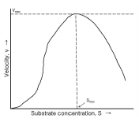
- 경쟁적 저해
- 비경쟁적 저해
- 기질활성
- 기질저해
(정답률: 75%)
44. 대규모 배양기에 유입되는 많은 양의 공기를 살균하기 위해서 적절한 매체는?
- 자외선
- Ethylene Oxide
- 감마선
- 유리섬유
(정답률: 53%)
45. 0.2h-1 희석률을 가진 연속식 효모발효에 있어서, 180g/L포도당액이 들어가서 다 소모되며, 1mol의 포도당이 소모될 때 0.45mol의 산소가 소비된다고 할 때, 체적산소섭취율(volumetric oxygen uptake rate) 은 몇 mmol of O2/L/h 인가? (단, 포도당 분자량은 180 이다.)
- 15
- 90
- 1350
- 2700
(정답률: 67%)
46. 다음 중 가장 에너지 효율이 높은 반응기는?
- 교반식 반응기
- 기포탑 배양기
- 루프식 반응기
- 전부 같다.
(정답률: 68%)
47. 효모를 사용하여 키모스탯(chemostat) 연구를 하는데 다음과 같은 생장식을 얻었다. μm=0.27h-1, Km=1.4g/L 기질의 유입농도는 100g/L로 고정되어 있고, 발효조의 부피는 50L이다. 이 때 세포의 세출을 방지하기 위한 최대 유량은 몇 L/h 인가? (단, 유입흐름은 멸균되어 있다.)
- 14.2
- 13.3
- 11.9
- 9.4
(정답률: 61%)
48. 점도가 높은 기질을 사용하여 가스 형태의 산물을 생성하는 고정화 효소의 반응기로 가장 알맞은 것은?
- 교반 반응기(stirred-tank reactor)
- 고정층 반응기(packed-bed reactor)
- 유동층 반응기(fluidized-bed reactor)
- 공기부양 반응기(air-lift reactor)
(정답률: 37%)
49. 연속 교반 흐름 반응기를 이용하여 발효공정을 수행하던 중 거품이 발생하는 문제가 발생되었다. 이에 대한 설명으로 틀린 것은?
- 거품 제거를 위해 head space가 필요하다.
- 거품 때문에 발효기의 최종 생산성이 제한될 수 있다.
- 화학적표면활성제의 첨가로 거품을 줄일수 없다.
- 기계적 거품제거기로 거품을 줄일 수 있다.
(정답률: 96%)
50. 에탄올 발효 반응에서 에탄올 1몰 생산에 28kcal의 열이 발생한다. 반응기의 체적이 5L이고 발효반응기 내의 미생물 농도는 4.6g/L이다. 미생물의 에탄올 비생산속도는 5g ethanol g cell-1h-1 일 때 발효반응기 내의 열발생속도는 몇 kcal/h 인가?
- 35
- 50
- 70
- 100
(정답률: 58%)
51. 균형성장기에 있는 미생물에 대한 설명으로 틀린 것은?
- 생체 조성이 일정하다.
- 생체구성물질의 합성속도는 미생물의 비성장속도 (specific growth rate)에 비례한다.
- 생체구성물질의 배가시간(doubling time)은 미생물 전체의 배가시간과 다르다.
- 탄소원 소모속도와 질소원 소모속도 사이에는 비례 관계가 존재한다.
(정답률: 65%)
52. 미생물 세포 농도를 측정하는 탁도 분광계 (turbidometer)에 대한 설명으로 틀린 것은?
- 시료실을 통과하는 빛은 세포밀도와 시료실 두께의 함수이다.
- 교반이 잘된 배지 시료를 적용해야 한다.
- 광학밀도(optidical density)와 미생물의 건조중량을 연결하는 보정곡선이 필요하다.
- 배지에 의한 빛의 흡수를 최소화하기 위해 일반적으로 자외선 구간의 파장이 사용된다.
(정답률: 88%)
53. 일정한 보존조건에서 시간에 따라 비가여적으로 활성을 잃는 효소의 어느 한 기질에 대한 Michaelis -Menten 상수 Km 값은 이 효소의 보존기간이 증가 할수록 어떻게 변화하겠는가?
- 증가한다.
- 변하지 않는다.
- 감소한다.
- 증가하다 감소한다.
(정답률: 66%)
54. 생물반응기를 대규모화 할 때 반응기의 크기 변화에 따라서 일정한 값을 유지하고자 선택하는 항목으로 가장 거리가 먼 것은?
- 배양액의 단위부피 당 교반에너지
- 배양액의 단위부피 당 산소전달계수
- 교반날개의 선단속도
- 초기접종량
(정답률: 71%)
55. 반응기의 대규모화(scale-up)를 위한 방법으로 가장 적절하지 않은 것은?
- 공기주입량을 동일하게 한다.
- 산소전달계수를 동일하게 한다.
- 레이놀즈수(Reynols number)를 동일하게 한다.
- 반응기 단위체적당 소요전력을 동일하게 한다.
(정답률: 82%)
56. 높은 기질 농도에 의해 효소반응이 저해되는 경우, 반응식은 다음과 같이 표시된다. 각 반응상수를 구하기 위하여 (1/S, 1/v)을 X-Y 평면에 도시하였을 때, 가장 올바른 그래프는? (단, v는 효소반응속도, S는 기질농도, Km은 포화상수, KI는 저해상수이다.)
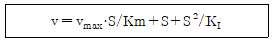
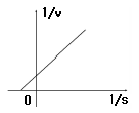
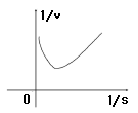
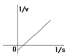
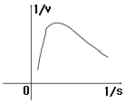
(정답률: 58%)
57. Michaelis-Menten 식의 저해 형태 중 기질의 농도를 높이면 저해물질에 의한 저해가 없어지는 효소 반응은? (단, [S]는 기질농도, [I]는 저해제 농도이며, Vm는 최대반응속도, Km은 Michaelis-Menten 상수, KI는 저해제 해리상수이다.)
- v = Vm·[S] / Km·(1+[I]/KI)+[S]
- v = {Vm·[S] / Km+[S]} · {1 / (1 + [I]/KI)}
- v ={Vm·[S] / (Km/A +[S])} · (1/A) A= 1 + [I]/KI
- v = Vm·[S] / Km+[S]+([S]2/Ks)
(정답률: 58%)
58. 기질의 농도가 커질 경우 반응속도가 감소하는 효소 반응은?
- 경쟁적 저해반응
- 비경쟁적 저해반응
- 반경쟁적 저해반응
- 기질 저해반응
(정답률: 67%)
59. 포도당 용액이 단속적으로 공급되는 유가식 배양에서 시스템이 준정상상태(Quasi steady state)에 있게 되는 t=2 시간에서의 매개변수 값이 다음과 같은 때 준정상상태에서 용기내의 제한기질의 농도는?
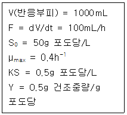
- 0.17g/L
- 0.5g/L
- 1g/L
- 1.5g/L
(정답률: 26%)
60. 생물반응기의 계측기구가 갖추어야 할 조건으로 가장 거리가 먼 것은?
- 무균성 유지
- 내구성
- 안정성
- 아날로그성
(정답률: 93%)
4과목: 생물분리공학
61. 다음 중 pH 11에서도 안정성이 높아 높은 pH에서도 친화성 리간드 결합 반응에 사용될 수 있는 화학 물질은?
- carbanyldimidazole
- cyanogen bromide
- divinyl sulfone
- epichlorohydrin
(정답률: 47%)
62. 열역학적으로 불안정한 용액은 용액 중에 포함 된 용질의 양이 열역학적인 평형값보다 높다. 이러한 과포화 용액을 안정하게 만들기 위해 가장 흔히 쓰는 방법은?
- pH의 변화
- 온도의 변화
- 삼투압의 변화
- 생성물에 대한 선택성
(정답률: 78%)
63. 생물반응기에서 분리(회수)와 정제 복합공정의 장점이 아닌 것은?
- 세포용해 성분 제거
- 생성물의 변성 방지
- 반응속도 증가
- 생성물에 대한 선택성
(정답률: 54%)
64. 등전 침전(isoelectric precipitation)에 관한 설명으로 틀린 것은?
- 단백질이 아무 전하도 띠지 않는 pH인 등전점에서의 단백질 침전이다.
- 단백질의 등전점은 pI = pK1+pK2 / 2로 정의 된다.
- 높은 표면 소수성 즉, 비극성 표면을 나타내는 단백질에는 효과적이지 않다.
- 가격은 저렴하지만, 낮은 pH에서 단백질이 변성 될 수 있다.
(정답률: 89%)
65. 다음 중 기계적인 세포 파쇄방법이 아닌 것은?
- ball mill법
- homogenization법
- 삼투충격법
- 초음파 발생법
(정답률: 88%)
66. 수성 이성분계에서 분배계수를 증기시키는 방법으로 잘못된 것은?
- PEG나 덱스트란의 분자량이 큰 것을 사용하여 분배계수를 증가시킨다.
- 친화성 리간드를 PEG에 붙여서 분배계수를 증가시키기도 한다.
- PEG에 양이온 또는 음이온 교환 특성을 갖도록 유도체화 시켜 분배계수를 증가시킨다.
- 수성 이성분계에 (NH4)2SO4나 KH2PO4 같은 염을 첨가하면 분배계수가 증가한다.
(정답률: 59%)
67. 한외여과기 또는 미세여과기 같은 막분리 공정에서 일반적으로 사용되는 막의 형태가 아닌 것은?
- 컬럼형(column type)
- 평판형(flat sheets)
- 실관형(hollow fiber)
- 나선감김형(spiral-wound)
(정답률: 39%)
68. pK1은 6이고, pK2는 10인 단백질의 등전점은?
- 4
- 6
- 8
- 12
(정답률: 82%)
69. 다음 중 식물세포벽을 가장 잘 분해하는 효소는?
- 아밀라제(amylase)
- 펙티나제(pectinase)
- 프로테아제(protease)
- 덱스트라나제(dextranase)
(정답률: 86%)
70. 흡착의 메커니즘이 아닌 것은?
- 물리적 흡착
- 이온 교환 흡착
- 친화성 흡착
- 한외 여과
(정답률: 100%)
71. 발효 배양액 중의 균체분리에 사용되는 여과기에 대한 설명으로 틀린 것은?
- 회전식 진공여과기는 효모나 방선균의 분리, 세포외 효소의 생산에 사용되면, 연속적으로 대량처리가 용이하다.
- 가압여과기는 압력이 20bar정도여서 여과하기 어려운 배양액의 여과에 알맞으며 연속적으로 처리가 가능하다.
- 엽상의 filter disc가 수직으로 배열된 구조로, 진공 또는 가압하에서 연속적으로 처리가 가능하다.
- 여과속도를 일정하게 유지하는데 필요한 압력강하를 여과시간에 따라 계산 할 수 있다.
(정답률: 56%)
72. 단백질에 용해도에 대한 설명으로 옳지 않은 것은?
- 에탄올과 같은 유기용매를 가하면 용해도가 감소한다.
- 전하가(valence)가 큰 염(salt)이 존재하면 용해도가 낮아질 수 있다.
- PEG(polyethylene glycol)과 같은 고분자 물질이 존재하면 용해도가 증가한다.
- 용액 중 이온강도(ionic strength)가 감소하면 용해도가 증가할 수 있다.
(정답률: 69%)
73. 항생물질, 혈청 등 액체에 용해되어 잇는 상태로서 특히 열에 불안정한 물질에 대해 사용하는 건조법은?
- 적외선 복사건조법
- 동결건조법
- 고주파건조법
- 유동층건조법
(정답률: 95%)
74. 원심부리기의 종말속도 Vt는 가속도 a에 비례한다. 가속도 a를 각속도 w와 원심분리기의 중심에서 입자까지의 거리 r로 나타낸 것은?
- wr
- w2r
- wr2
- w2r2
(정답률: 56%)
75. 페니실린 발효액으로부터 이소아밀아세테이트(isoamylacetate)를 이용하여 페니실린을 추출하려한다. 100mL의 발효액에 10mL의 이소아일아세테이트를 섞어 pH3에서 충분히 교반시킨 후 상분리를 거쳐 이소아밀아세테이트상과 물상내의 페니실린 농도를 측정하였더니 각각 5g/L와 0.5g/L이었다. 이 추출계에서의 분배계수(partition coefficient)는?
- 0.04
- 0.4
- 10
- 25
(정답률: 64%)
76. 발효 생산물 중 세포내 생산물은?
- 알코올
- 항생제
- 유기산
- 대장균을 이용한 재조합 DNA 단백질
(정답률: 82%)
77. 발효 공정은 대체로 수용액 상태에서 진행되어, 발효 최종 산물도 수용액 상태이다. 회수 정제 공정에서 대부분의 수분을 제거하기에 가장 바람직한 시기는?
- 회수정제공정의 최종 단계인 건조 공정 직전
- 회수정제공정 중 농축 공정이 있고 난 중간 단계
- 회수정제공정 중 침전 공정을 거친 다음 단계
- 회수정제공정 중 가장 초기 단계
(정답률: 90%)
78. 여과에 소모되는 시간에 대하여 설명한 것 중 옳은 것은?
- 점도에 반비례한다.
- 여액의 밀도에 반비례한다.
- 압력 변화(ΔP)에 반비례한다.
- 여과 면적의 제곱에 비례한다.
(정답률: 60%)
79. 알코올과 물의 혼합물이 80℃, 기압 760mmHg에서 기액평형에 도달하였다. 알코올의 가상에서의 조성은? (단, 알코올과 물의 순 성분 증기압은 각각 760, 355[mmHg]이다.)
- 0.2
- 0.6
- 0.8
- 1.0
(정답률: 34%)
80. 미생물의 이화반응시 ATP(adenosine triphosphate)의 생성 기작이 아닌 것은?
- 기질수준 인산화
- 산화적 인산화
- 광인산화
- 혐기적 인산화
(정답률: 59%)
5과목: 생물공학개론
81. 플라스미드에 관련된 내용 중 옳지 않은 것은?
- 플라스미드의 크기에 따라 형질전환의 효율이 결정된다.
- 플라스미드에는 다양한 제한 효소에 의하여 절단되는 위치가 있다.
- 서로 다른 플라스미드도 공존할 수 있다.
- 유전자 은행 제조에 유리하다.
(정답률: 49%)
82. 확인하기 힘든 성분이나 구조를 파악하기 위해 사용하는 광학장비로서 구성비나 격자구조, 결합구조 등을 분석하는데 적합하지 않은 기기는?
- UV spectroscopy
- IR spectroscopy
- mass spectroscopy
- Ion analyzer
(정답률: 72%)
83. 연속발효에서 희석비(dilution rate)에 따른 실험자료를 통해 다음 그래프를 얻었다. 기질의 농도곡선은?
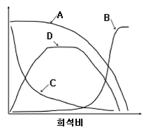
- A
- B
- C
- D
(정답률: 62%)
84. 포도당을 사용하여 곰팡이를 회분식으로 키워서 다음과 같은 결과를 얻었다. 
기질 수율(YX/S)은 얼마인가?
- 0.4 g 세포/ g 기질
- 0.6 g 세포/ g 기질
- 0.8 g 세포/ g 기질
- 1.0 g 세포/ g 기질
(정답률: 48%)
85. GC(Gas Chromatography)의 장치에서 검출기에 해당하지 않는 것은?
- TCD(Thermal Conductivity Detector)
- ECD(Electron Capture Detector)
- UVD(Ultraviolet Detector)
- FID(Flame Ionization Detector)
(정답률: 82%)
86. COOH기와 NH3기 각각의 해리상수 K에 대한 pK값이 pKCOOH는 2.4이고 pKNH3는 9.6인 아미노산이 있다면, 이 아미노산의 등전점(isoelectric point)은?
- 2.9
- 4
- 4.8
- 6
(정답률: 92%)
87. 세포막을 통한 작은 분자들의 수송 가직은 에너지에 의존하지 않은 기작과 에너지에 의존하는 기작으로 구분할 수 있는데 에너지에 의존하지 않는 기작으로만 짝지어진 것은?
- 수동확산, 능동수송
- 촉진확산, 능동수송
- 촉진확산, 집단전이
- 수동확산, 촉진확산
(정답률: 78%)
88. 다음 중 빛 에너지를 당과 같은 화학에너지로 전환시키는 세포내 소기관은?
- 엽록체
- 미토콘드리아
- 엽록소
- 리소좀
(정답률: 98%)
89. 회분식 발효에 있어서 박테리아의 성장이 지수성장기(exponential growth phase)에 있으며, 그 때의 비성장 속도가 0.5hr-1 일 때, 세포의 양이 두배가 되는데 걸리는 시간은?
- 0.6 hr
- 1.0 hr
- 1.4 hr
- 2.0 hr
(정답률: 73%)
90. 다음 중 [의약품제조 및 품질관리기준](KGMP)에 의한 원료의약품에 대한 설명으로 올바른 것은?
- 원료의약품에는 포장과 표시작업에 사용되는 용기·표시재료 및 포장재료도 포함된다.
- 원료의약품은 합성, 발효, 추출 등 또는 이들 조합에 의하여 제조된 물질로서 완제 의약품의 제조 원료가 되는 것을 말한다.
- 원료의약품은 의약품의 제조공정 중에 만들어진것으로서 필요한 제조 공정을 더 거쳐야 완제품으로 되는 것을 말한다.
- 원료의약품은 의약품제조에 사용되는 물질을 말하며, 완제품에 남아 있지 아니하는 물질도 이에 포함된다.
(정답률: 62%)
91. 정지기 동안 페소 내의 저장물질을 분해하여 새로운 구성단위 물질들과 에너지 생성 단량체들을 만드는 대사를 무엇이라고 하는가?
- 외인성 대사
- 내인성 대사
- 겉보기 대사
- 지연 대사
(정답률: 89%)
92. 다음 중 세포 질량 농도 결정법 중 간접법은 무엇인가?
- 광학밀도 측정
- ATP 농도 측정
- 건조중량 측정
- 충전 세포 부피 측정
(정답률: 73%)
93. 생식세포의 염색체 속에 들어 있는 것으로 DNA로 구성된 기본 단위를 무엇이라 하는가?
- 유전자
- 미토콘드리아
- 핵
- 리보솜
(정답률: 90%)
94. GMP의 유효성 확인 단계 중 OQ, IQ, PQ 과정을 순서대로 배열한 것은?
- IQ → OQ → PQ
- OQ → PQ → IQ
- PQ → IQ → OQ
- PQ → OQ → IQ
(정답률: 94%)
95. 한 동물에 대해 정확한 유전적 복사체를 만들기 위해 사용되는 유전학 기술은?
- 형질전환동물
- 이형접합성
- 플라스미드
- 클로닝
(정답률: 91%)
96. 배양 중의 세포 농도를 추산하기 위하여 사용되는 방법으로 시료 배양액 중에 떠 있는 세포가 빛을 흡수하는 성질을 기초로 한 방법은?
- 충전세포 부피법
- 판계수법
- RNA 분석법
- 광학밀도측정법
(정답률: 95%)
97. 미생물 생장에 대한 경쟁적 기질저해의 표현식으로 옳은 것은?
- μg = μm/{i(1+Ks/S)·(1+S/KI)}
- μg = μm·S/{Ks·(1 + S/KI) + S}
- μg = μm/{(1 + Ks/S)·(1 + I/KI)}
- μg = μm·S/{Ks·(1 + I/KI) + S}
(정답률: 56%)
98. 다음 중 효모 염색체 속으로 삽입에 의해서만 복제가 가능한 벡터는?
- YEp
- YIp
- YRp
- YAC
(정답률: 55%)
99. 대기압에 대한 설명으로 옳은 것은?
- 게이지로 측정한 압력
- 게이지압과 대기압의 곱
- 게이지압과 대기압의 합
- 게이지압과 절대압과의 차
(정답률: 74%)
100. DNA의 한쪽 가닥의 서열이 5-GAATTC-3이다. 이 가닥과 상보적인 가닥의 서열로 알맞은 것은?
- 5-ACTTAA-3
- 5-CAATTC-3
- 3-CTTAAG-5
- 3-CUUAAG-5
(정답률: 97%)